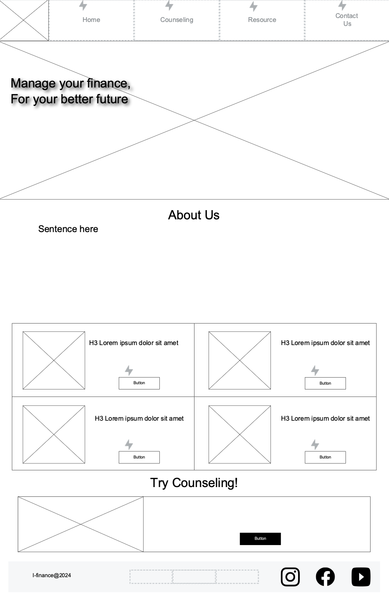
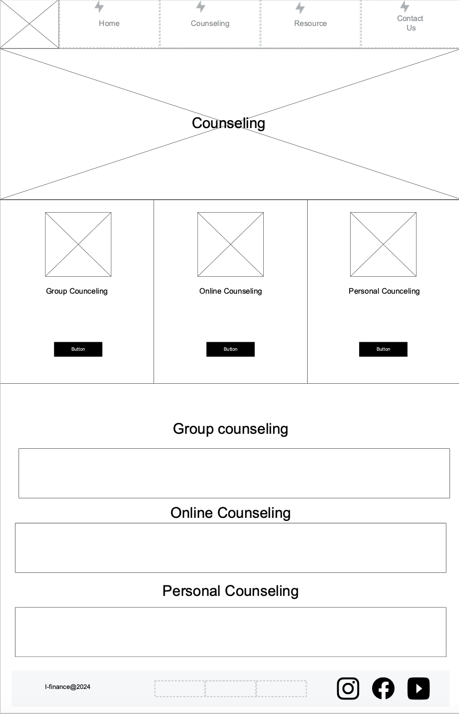
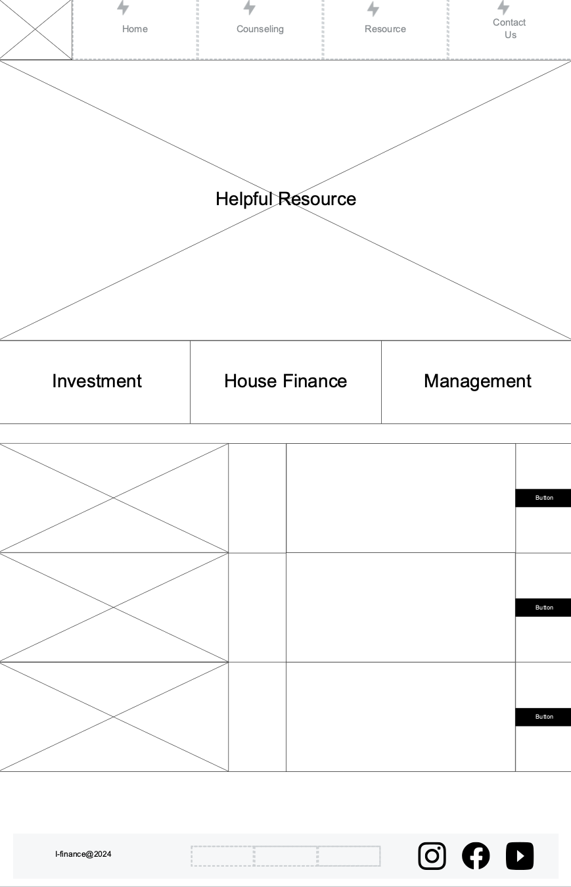

Overview
Purpose
The main purpose of this website is to show detailed financial information about our revenues, budjets, divident amount, growth rate, and our future plans as a company. The goal is to provide sufficient information and data about the company and make our customers satisfied.
Audience
Customers who uses our financial planning services or investors who owns stocks of our company. They want to know how our company will run business for the upcoming year and how much our company have grown. The age range may vary from 20s to 80s.
Branding
Website Logo
Style Guide
Color Palette
Palette URL:
https://coolors.co/6184d8-04080f-a39171-ecfff8| Primary | Secondary | Accent 1 | Accent 2 |
|---|---|---|---|
| #6184D8 | #04080F | #A39171 | #ECFFF8 |
Typography
Heading Font: DM Serif Display
Paragraph Font: Open Sans
Navigation
Site Map
Wireframes
  Home
Learn Finance together


Do you want to learn about finance to get ready for your future business or for your family, but don't know what to do? Let us help to find out the best way to manage your finance! I-Finance provides lots of financial informations that you can learn about money from scratch! You can even get free counseling with our financial planner!
Established in 1994, I-Finance has solidified its position as a trusted leader in the financial services industry, boasting a rich legacy of aiding over 2,000,000 satisfied customers in navigating their financial challenges with ease and confidence. At I-Finance, we pride ourselves on our unwavering commitment to delivering tailored solutions that address the diverse and evolving needs of our clientele. With a team of seasoned professionals who possess a wealth of expertise in various financial domains, we stand as pillars of support for individuals alike, offering a comprehensive suite of services designed to empower our customers to achieve their financial goals efficiently. Whether it's strategic financial planning, investment advisory, debt management, or wealth preservation, I-Finance excels in providing personalized guidance and actionable insights that pave the way for sustainable financial success.
Our dedication to excellence and innovation sets us apart in the competitive landscape of the finance industry. Leveraging cutting-edge technology and a forward-thinking approach, we continually strive to anticipate market trends and tailor our offerings to ensure maximum value and benefit for our clients.
At I-Finance, we understand that each financial journey is unique, which is why we prioritize a client-centric approach in everything we do. From the initial consultation to ongoing support, our team is committed to fostering strong, long-lasting relationships built on trust, transparency, and mutual respect.
Join the ranks of countless satisfied customers who have experienced the difference that I-Finance can make in their financial lives. Discover the peace of mind that comes from partnering with a company that not only understands your needs but also has the expertise and resources to help you achieve your financial aspirations. Welcome to I-Finance, where your financial success is our top priority.
Resource
Business Resource


We especially focus on customers' finance plan. For example, stock investment for future savings, cost distribution for your own business, and some finance tips.
freakently asked topic
・How to manage household finance effectively
・How to start investment
・What is the difference between stock and FX?
・How to manage the budged for the small business
・How to make a great accountnig record
We can sinserly take each topics that customers give us and will make the best descision for you together.
Business Counseling


If you need personal support, it's our job. We provide one on one or group financial counceling in customer needs for their finance. All you have to prepare is your will for better finance. You can choose the way to meet with our counceler online or in person. If you want a online counceling, you can click on the counceling botton above or click here. If you want a personal counceling, click the counceling botton and choose “personal counceling” If you need urgent help about finance, you can also contact us for (208)2345-6789 or I-finance3322@gmail.com
Get ready for the Counceling
Once you got the appointment with our counceler, you may want to prepare some thought about what you want to talk about your finance. It will be helpful both of us to get focused on what you really want to solve in your finance. Feel free to bring any thought and concerns about your finance plan! We love to listen!